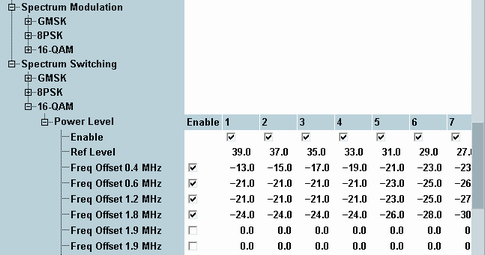
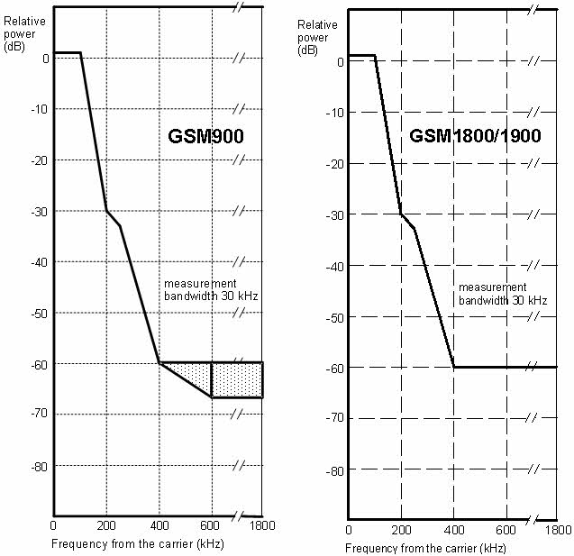

The energy that spills outside the designated radio channel increases the interference with adjacent channels and decreases the system capacity. According to the conformance test specification 3GPP TS 51.010-1, the amount of unwanted off-carrier energy is assessed by the spectrum due to modulation and the spectrum due to switching. Refer to the spectrum modulation and spectrum switching results of the multi-evaluation measurement. The spectrum limits are defined in the configuration dialog.

The GSM limit specifications are equal for all modulation schemes, however, the limits can be chosen independently on the R&S CMW.
The limit lines for the spectrum due to modulation depend on:
- The GSM band,
- The frequency and
- For frequencies that differ from the carrier frequency by more than 400 kHz also on the output power of the mobile station.
The following values apply up to a frequency offset of 1.8 MHz:
GSM400/GT800/850/900 Relative power at MS output power | GSM1800/1900 Relative power at MS output power | |||
|---|---|---|---|---|
Frequency offset /MHz | ≤ 33 dBm (in dBc) | ≥ 39 dBm (in dBc) | ≤ 24 dBm (in dBc) | ≥ 36 dBm (in dBc) |
0.1 | +0.5 | +0.5 | +0.5 | +0.5 |
0.2 | –30 | –30 | –30 | –30 |
0.25 | –33 | –33 | –33 | –33 |
0.4 | –60 (GMSK mod.) –54 (8PSK and 16-QAM mod.) | –60 | –60 (GMSK mod.) –54 and –60 (8PSK/16-QAM mod.)*) | –60 |
≥ 0.6, ≤ 1.8 | –60 | –66 | –60 | –60 |
*) For equipment supporting 8PSK/16-QAM, the limit of –54 dBc applies to MS output powers up to +30 dBm, –60 dBc to MS output powers above +30 dBm.
In the frequency range above 400 kHz from the carrier and for output powers between 33 dBm and 39 dBm (GSM400/GT800/850/900), the limit depends linearly on the output power. The resulting spectral mask for GMSK modulation is shown below.

As an alternative to the relative limit values quoted above, 3GPP specifies the following absolute limits, again depending on the frequency offset from the carrier and the GSM band. If the relative limits are below the absolute limits, the latter has to be applied.
Frequency offset in MHz | Absolute power GSM400/GT800/850/900 | Absolute power GSM1800/1900 |
|---|---|---|
< 0.6 | –36 dBm | –36 dBm |
≥0.6, <1.8 | –51 dBm | –56 dBm |
≥1.8 | –46 dBm | –51 dBm |
The limit lines for the spectrum due to switching cover offset frequencies between 0.4 MHz and 1.8 MHz. They depend on the output power of the mobile station. The following limits are specified in specification 3GPP TS 51.010. Note that the figures allow for superimposed contributions from the modulation spectrum (measured in peak hold mode), especially at higher power levels.
GSM 400 / GT 800 / GSM850 / GSM900 | Maximum MS level measured (peak hold) /dBm at frequency offset | |||
|---|---|---|---|---|
MS power /dBm | 0.4 MHz | 0.6 MHz | 1.2 MHz | 1.8 MHz |
+39 | –13 | –21 | –21 | –24 |
+37 | –15 | –21 | –21 | –24 |
+35 | –17 | –21 | –21 | –24 |
+33 | –19 | –21 | –21 | –24 |
+31 | –21 | –23 | –23 | –26 |
+29 | –23 | –25 | –25 | –28 |
+27 | –23 | –26 | –27 | –30 |
+25 | –23 | –26 | –29 | –32 |
+23 | –23 | –26 | –31 | –34 |
≤21 | –23 | –26 | –32 | –36 |
GSM 1800 | Maximum MS level measured (peak hold) /dBm at frequency offset | |||
|---|---|---|---|---|
MS power /dBm | 0.4 MHz | 0.6 MHz | 1.2 MHz | 1.8 MHz |
+36 | –16 | –21 | –21 | –24 |
+34 | –18 | –21 | –21 | –24 |
+32 | –20 | –22 | –22 | –25 |
+30 | –22 | –24 | –24 | –27 |
+28 | –23 | –25 | –26 | –29 |
+26 | –23 | –26 | –28 | –31 |
+24 | –23 | –26 | –30 | –33 |
+22 | –23 | –26 | –31 | –35 |
≤20 | –23 | –26 | –32 | –36 |